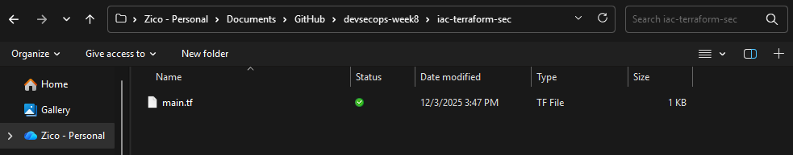
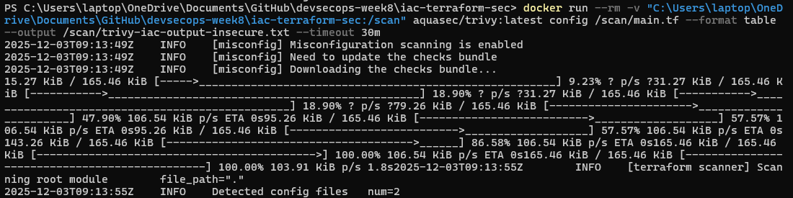
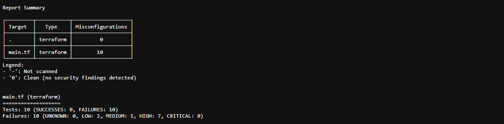
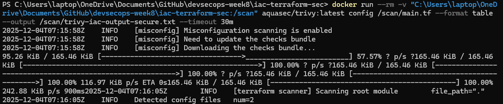
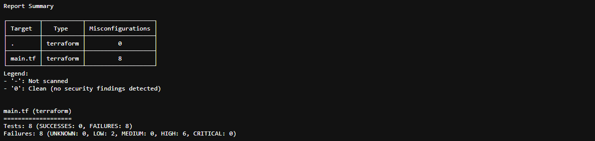
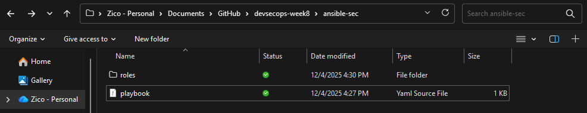
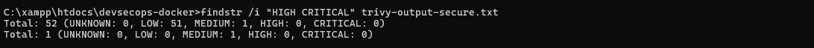
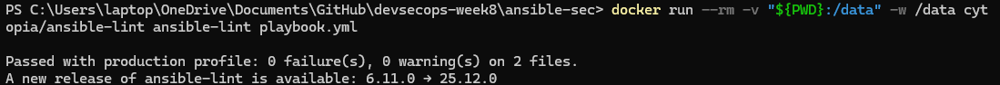
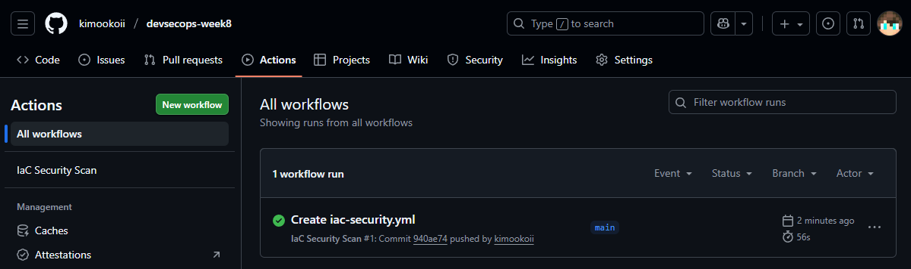
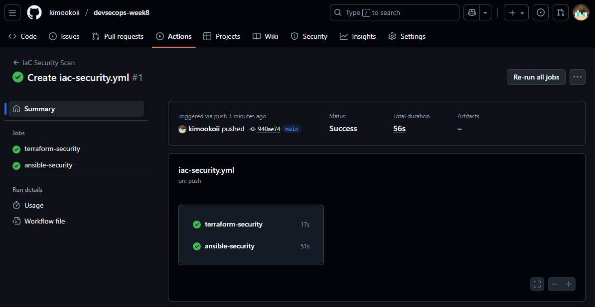

Pada praktik DevSecOps minggu ke-8 ini, kita berfokus pada keamanan Infrastructure as Code (IaC) dengan menggunakan dua tool utama:
- Trivy → untuk memeriksa misconfiguration pada file Terraform
- ansible-lint → untuk memeriksa kualitas dan keamanan playbook Ansible
Karena Ansible dan sebagian besar tool IaC dibuat untuk berjalan di lingkungan Linux/POSIX, sedangkan Anda bekerja menggunakan Windows 11 tanpa WSL atau Virtual Machine, maka seluruh proses scanning akan dilakukan melalui:
- Docker container (untuk menjalankan Trivy & ansible-lint)
- GitHub Actions (opsional sebagai alternatif lingkungan eksekusi CI/CD)
Dengan pendekatan ini, Anda tetap bisa melakukan seluruh langkah DevSecOps secara penuh tanpa berpindah OS.
Dokumentasi berikut memuat:
- Instalasi paket dan persiapan direktori
- Pembuatan konfigurasi IaC (Terraform & Ansible)
- Penyisipan minimal 3 misconfiguration
- Scanning otomatis menggunakan Trivy dan ansible-lint
- Perbaikan semua temuan (findings)
- Pembuatan laporan akhir
Seluruh langkah ditulis rinci dan dilengkapi script, command, serta penjelasan perbaikan agar mudah direplikasi pada mesin Windows.
1.1 Flow Praktik 1 : Tahap Persiapan
Buat direktori baru untuk IaC Terraform:
1.2 Flow Praktik 1 : Buat File Terraform Insecure
File main.tf dibuat secara sengaja insecure untuk memunculkan temuan ketika discan menggunakan Trivy.
main.tf (versi insecure)

Misconfiguration yang dimasukkan:
- acl = "public-read" → bucket dapat dibaca publik
- versioning.enabled = false → tidak ada proteksi versi
1.3 Flow Praktik 1 : Scan dengan Trivy (Tidak Aman)
Trivy dijalankan melalui Docker

Output akan tersimpan pada:
Buka file trivy-iac-output-insecure.txt:

1.4 Flow Praktik 1 : Fix Misconfiguration
Ubah file Terraform menjadi aman:
main.tf (versi secure)
1.5 Flow Praktik 1 : Scan Ulang dengan Trivy (Aman)
Trivy dijalankan melalui Docker

Output akan tersimpan pada:
Buka file trivy-iac-output-secure.txt:

Hasil menunjukkan bahwa misconfiguration telah hilang.
2.1 Flow Praktik 2 : Tahap Persiapan
Persiapan Direktori
2.2 Flow Praktik 2 : Buat File Playbook Insecure
Playbook awal dibuat dengan beberapa kesalahan konfigurasi agar ansible-lint menghasilkan temuan.
playbook.yml (versi insecure)

Misconfiguration yang ditambahkan (3 buah):
- File permission insecure → 0777
- No handlers → perubahan konfigurasi tidak memicu restart
- Truthy YAML salah (yes)
- Modul tidak FQCN (apt/copy) (bonus)
2.3 Flow Praktik 2 : Jalankan Scanning ansible-lint
Scan menggunakan ansible-lint
Hasil

Temuan (findings) yang muncul:
- name[play]: All plays should be named. (warning) playbook.yml:1
- yaml[truthy]: Truthy value should be one of [false, true] playbook.yml:2
- fqcn[action-core]: Use FQCN for builtin module actions (apt). playbook.yml:4 Use `ansible.builtin.apt` or `ansible.legacy.apt` instead.
- fqcn[action-core]: Use FQCN for builtin module actions (copy). playbook.yml:9 Use `ansible.builtin.copy` or `ansible.legacy.copy` instead.
2.4 Flow Praktik 2 : Perbaikan Playbook dan Jalankan Scanning Ulang
Berikut yang perlu diperbaiki:
| Komponen |
Sebelumnya |
Setelah Perbaikan |
Alasan |
| Nama Play |
Tidak ada |
- name: Playbook |
Memenuhi rule lint |
| Boolean |
yes |
true |
Format YAML standar |
| Modul |
apt, copy |
ansible.builtin.apt, ansible.builtin.copy |
FQCN wajib |
| Mode file |
0777 |
0644 |
Security best practice |
| Struktur task |
Kurang rapih |
Konsisten & lint-friendly |
Readability & maintainability |
playbook.yml (versi secure)
Scan Ulang menggunakan ansible-lint
Hasil

Tidak ada lagi temuan (0 failures, 0 warnings).
Playbook dinyatakan aman dan sesuai standar Ansible modern.
3. Integrasi IaC Security dengan GitHub Actions
Membuat Repository GitHub (Langkah Awal)
Buat repository baru
- Masuk ke GitHub: https://github.com
- Klik tombol New repository
- Isi:
- Repository name: devsecops-week8
- Description: Repository untuk tugas DevSecOps — Infrastructure as Code (IaC) Security
- Visibility: Public
Repo kamu sekarang siap digunakan.
Push kode aplikasi ke GitHub
Jalankan di Git Bash / CMD:
Setelah push, seluruh kode aplikasi akan muncul di repository GitHub.

Tambahkan Workflow GitHub Actions untuk IaC Security
Untuk melakukan pemeriksaan keamanan otomatis, buat file workflow pada direktori:
Buat file iac-security.yml
Isi:
Workflow ini terdiri dari dua job:
terraform-security
- Memindai file Terraform menggunakan Trivy
- Melakukan terraform validate
ansible-security
- Menginstal Ansible & ansible-lint
- Melakukan scan terhadap playbook Ansible
Semua pemeriksaan dilakukan otomatis setiap kali ada push atau pull request.
Menjalankan Pipeline
Setelah workflow dibuat dan dipush, pipeline otomatis berjalan.
Masuk ke:
GitHub → Actions

Di bagian output akan terlihat:

Jika konfigurasi sudah diperbaiki dan tidak ada misconfiguration, status pipeline akan berwarna hijau (success).
4. Kesimpulan
Praktikum Minggu 8 DevSecOps ini berhasil menunjukkan bagaimana penerapan keamanan pada Infrastructure as Code (IaC) dapat dilakukan secara sistematis menggunakan Terraform dan Ansible. Melalui pembuatan konfigurasi yang disengaja insecure, proses scanning menggunakan Trivy dan ansible-lint mampu mengidentifikasi berbagai misconfiguration seperti permission file yang terlalu permisif, modul tanpa FQCN, boolean YAML yang tidak standar, dan konfigurasi layanan cloud yang berpotensi terbuka. Setelah dilakukan perbaikan, proses pemindaian ulang menunjukkan bahwa seluruh temuan telah terselesaikan. Integrasi pipeline otomatis melalui GitHub Actions memastikan bahwa setiap perubahan pada repository akan selalu melewati proses validasi keamanan, sehingga mencegah misconfiguration masuk ke tahap deployment. Dengan demikian, seluruh rangkaian kegiatan ini memberikan pemahaman praktis bahwa keamanan IaC bukan hanya sebatas menulis konfigurasi, tetapi juga memastikan bahwa proses pembangunan, validasi, dan otomatisasi berjalan secara aman, konsisten, dan sesuai standar DevSecOps modern.